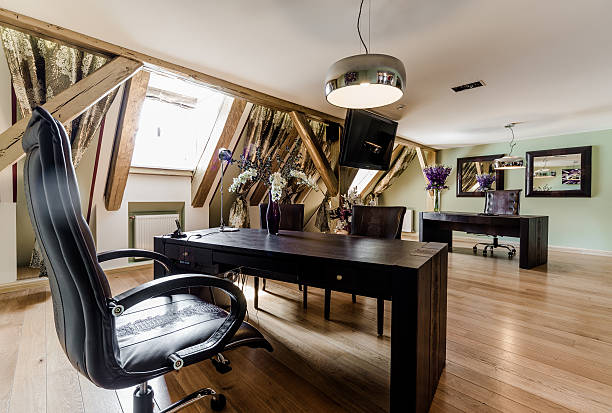

Find out Why Top Professionals Choose Private Offices in Metro Center
Posted by on 2024-06-05
Have you ever wondered why top professionals choose private offices in Metro Center? The answer lies in the numerous benefits that come with having a dedicated workspace in this prime location.
First and foremost, privacy is key for many professionals who require a quiet and distraction-free environment to focus on their work. Private offices offer just that - a space where you can shut out the noise and interruptions of an open office layout. This allows you to concentrate fully on your tasks at hand without any disruptions.
Additionally, private offices in Metro Center often come equipped with state-of-the-art facilities and amenities that can help boost productivity and efficiency. From high-speed internet access to conference rooms and meeting spaces, these offices are designed to cater to the needs of busy professionals who require top-notch resources to excel in their work.
Moreover, the prestigious address of Metro Center adds a level of credibility and professionalism to your business. Clients and partners will be impressed by your choice of location, which can help elevate your brand image and reputation in the industry.
Finally, private offices provide a sense of ownership and control over your workspace. You can personalize it according to your preferences, creating a comfortable and inspiring environment that motivates you to do your best work.
In conclusion, there are many reasons why top professionals choose private offices in Metro Center. From privacy and productivity benefits to enhanced credibility and customization options, these spaces offer everything needed for success in today's competitive business world. If you want to take your career or business to the next level, consider investing in a private office in this prime location - you won't regret it!